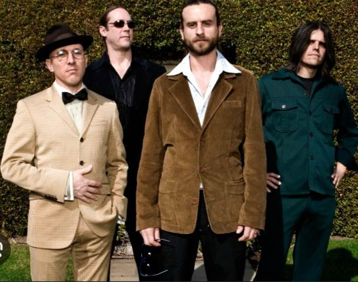
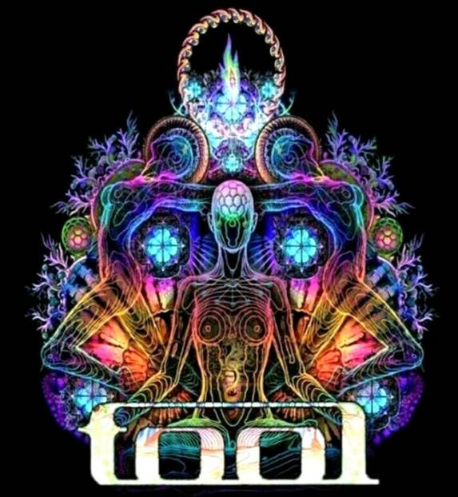

<!doctype html>
<html></html>
<head><title>Tool the band</title>
<meta name="description" content="this is the description">
<link rel="stylesheet" href="style.css"
<header>
<main>


    <!-- the following sections are 3 links to navigate the website "tour dates, discography and merch" -->
    


 <nav class="navlist">   
        
    
        <a href="Tour dates.html">TOUR DATES</a>
        
        <a href="Discography.html">DISCOGRAPHY</a>
      
        <a href="merch.html">MERCH</a>
        
        
</nav>
     


<body>         <!--this section is denoted by a line break and the about bang info -->
    <hr>
<H1><I>T     O     O     L</I></H1>
    <section>
        <h3>About</h3> 
        
        <!-- header 3 font size  -->
        
        <p> Due to Tool's incorporation of visual arts and very long and 
        complex releases, the band is generally described as a style-transcending 
        act and part of progressive rock, psychedelic rock, and art rock. What's 
        the name, Tool? "In a 1994 interview, legendary drummer Danny Carey says that the band's name 
        stands for how they want their music to be a "tool" to aid in understanding 
        lachrymology."  <i>Lachrymology</i>, founded in the 1940s by Ronald P. Vincent, 
        translates literally to 'the study of crying'."</p>
<!--         
        this section 2 images, one of the band and a picture of their art style. -->
        
        <BR>
        
                    
    
    
    </section> 

    <footer><b>Undeniable TOOL</b></footer>


    
    


</header>
</main>
</body>
</html>
